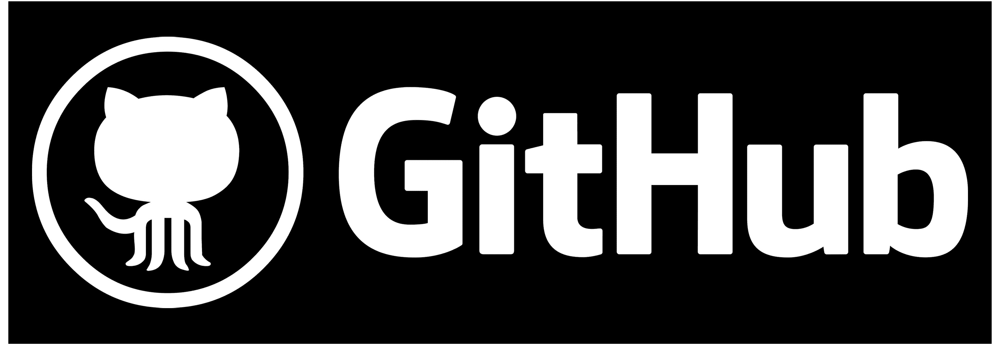

Benefits of using Github
-
Version Control:
GitHub provides robust version control capabilities through Git, allowing developers to track changes, collaborate with others, and revert to previous versions if needed.
-
Collaboration:
GitHub facilitates collaboration among team members by providing features like pull requests, code reviews, and issue tracking. Developers can work together seamlessly on projects, review each other's code, and discuss changes.
-
Centralized Repository:
GitHub serves as a centralized repository for storing code, documentation, and other project assets. This centralization makes it easy for team members to access and contribute to the project from anywhere.
-
Open Source Community:
GitHub hosts millions of open-source projects, making it a hub for developers to discover, contribute to, and learn from a wide range of projects across various domains.
-
Documentation:
GitHub allows developers to create and maintain documentation for their projects using Markdown and other formats. Well-documented projects are easier to understand, contribute to, and maintain over time.
-
Project Management:
GitHub provides features for project management, including project boards, milestones, and task tracking. These tools help teams organize their work, prioritize tasks, and track progress effectively.